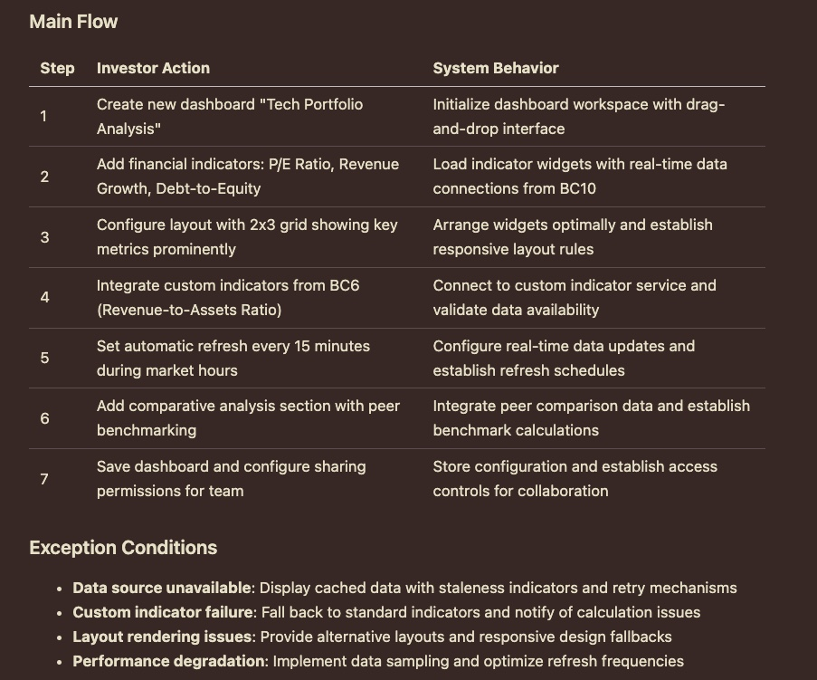

class: center, middle # Daniel Lin's Works --- ###### Executive Summary ### Key Highlights<br/> Here are the highlights that best showcase my experience: - [Work Experience @Pickupp (2021-2023)](./index.html#9) - A 2 years full-stack development experience across diverse technical challenges - [LZStock Project (2025)](./index.html#35) - Golang based microservices architecture project with enterprise-grade DDD architecture - A project with CI/CD-ready Kubernetes deployment --- ###### Company List ### Company Full Name ##### @Pickupp for PICKUPP PTE LTD (Singapore, Hong Kong, Taiwan, Malaysia) Pickupp is a logistics company that redefines the industry with a data-driven approach, providing transparent and customer-centric services and technology to help businesses scale. ##### @PG for Positive Grid Limited (Worldwide) Positive Grid is a music technology company that specializes in developing innovative digital amplifiers and effects software for guitarists and bassists, with well-known products like the Spark series smart amp. ##### @Blue for BlueWell Technology Ltd. (Taiwan) BlueWell is a privately owned software and consultancy outsourcing company based in Taipei offering software development services to clients majorly in Asia since 2013 <img style="width:30%;vertical-align: top;" src="./statics/img/Pickupp/landing.jpg" alt="pickupp_landing"> <img style="width:30%;vertical-align: top;" src="./statics/img/PG/landing.jpg" alt="pg_landing"> --- ###### Skills ### Planning <br/> #### From Seneca - System Design - Database Design - Testing Project #### From Portfolios - LZStock (Lazy-Stock-Screener) with DDD (Domain-Driven Design) --- ###### Skills ### Front End<br/> Feature + Tech #### From Work Experience - (@Pickupp) Admin Order detail page (React hooks) - (@Pickupp) Feature toggle library (React hooks) - (@Pickupp) Websocket serice (React hooks) - (@PG) eCommence website for music technology company (JS+SASS) - (@Blue) Website as product (JS+CSS) #### From Portfolios - LZStock (React+Jotai+TailwindCSS+RadixUI+TanStack) - Price Dashboard (React+Redux+SASS) --- ###### Skills ### Back End<br/> Feature + Tech + Performance tuning #### From Work Experience (@Pickupp) - Websocket serice (Node.js) - Feature Toggle Library (Node.js+Golang) - Log library with asynLocalStorage (Node.js) - Migrate to new Order system (Node.js+Golang) - Performance tuning with SQL plan (PostgreSQL) #### From Portfolios - LZStock (Golang+Gorm) - Price Dashboard (Node.js+Mongoose) - Email Sender (Node.js+Mongoose) --- ###### Skills ### DevOps<br/> #### From Work Experience (@Pickupp) - CI/CD pipelines (Bitbucket+CircleCI+AWS ECR+ AWS EKS) - Docker, K8S - Grafana+Prometheus #### From LZStock - CI/CD pipelines (Gitlab+CircleCI+Gitlab Container Registry+ Google Cloud GKE) - Docker, K8S --- ###### Skills ### Data<br/> Leverage ETL process #### Portfolios - SEC Data Pipeline (Python+Pandas) --- ###### Work Experience @Pickupp (2021-2023) ### Summary<br/> Gained comprehensive full-stack development experience across diverse technical challenges over 2 years. <img style="width:100%;" src="./statics/img/Pickupp/PR.jpg" alt="db_load"> --- ###### Work Experience @Pickupp (2021-2023) ### Jobs: Different types of tasks<br/> - Tech part - Built websocket service (2021-2022) - Built feature toggle library (2021-2022) - Built log library with asyncLocalStorage (2022-2023) - Feature part - Integrate with third party logistic service (2021-2022) - Built new order service with backward compatibility (2022-2023) - Built new order detail page (2022-2023) - Task management and team coordination - Provided technical consultation - Muti-culture team cooperation - Managed task priority and guide junior developers - Reviewed PRs and demo features bi-weekly --- ###### Work Experience @Pickupp (2021-2023) ### Tech Part: Websocket Service - React client library - Context and Provider pattern with hook to pass down and access connection instance - useCallback to reuse same websocket instance - A independent Express service to handle websocket connection - Connected to other services for authentication - Subscribe to Nats JetStream to receive events - Leveraged ES6 Map to store connection object to track each connection - Periodically check connection liveness --- ###### Work Experience @Pickupp (2021-2023) ### Tech Part: Real-time Feature Toggle System <br/> - React client library - Context and Provider pattern with hook and React component access feature toggle state - A push method to update feature toggle state via websocket - A sync method without external network call to check particular feature toggle state - Golang and Node.js version of feature toggle library - A push method to update feature toggle state via Nats JetStream - A gRPC retry mechanism to prevent network error to setting service - A table in DB to store feature toggle state with Date range to check if feature toggle is enabled - A UI in admin panel to manage feature toggle period --- ###### Work Experience @Pickupp (2021-2023) ### Tech Part: Log Library - Leverage AsyncLocalStorage to create a independent context for a series of asynchronous operations in native way. - Leverage Reflect to intercept function call and log the function name and parameters <div style="text-align:center;"> <img style="width:70%;" src="./statics/img/Pickupp/logLib.jpg" alt="log_lib"> </div> --- ###### Work Experience @Pickupp (2021-2023) ### New Order Service #### Tasks - Latest Event as Order Status - Many Join among Tables - Index Missing Hit - Performance or Single Source of Truth - System Migration - Event Sequence - Fault Tolerance #### Reflections That are all the tasks related to new order service I did at Pickupp. However, after returning to school and studying more about system design, I believe my initial approach back then could be improved with at least one of the optimal solution, if there is one, in the following "New Order Service" pages. Otherwise, the task listed in that page is just a showcase. --- ###### Work Experience @Pickupp (2021-2023) ### New Order Service: Latest Event as Order Status #### Initial Approach: Latest Event <div style="text-align:center;"> </div> #### Optimal Approach: Apply Event to Single State <div style="text-align:center;"> <img style="width:60%;" src="./statics/img/Pickupp/orderStatusInOrder.jpg" alt="event_sourcing"> </div> --- ###### Work Experience @Pickupp (2021-2023) ### New Order Service: Key Value Pairs in RDB #### Initial Approach: Key-Value in SQL <div style="text-align:center;"> <img style="width:50%;" src="./statics/img/Pickupp/keyValuePair.jpg" alt="key_value_pair"> </div> #### Pain points: - Lack of referential integrity constraints - Lack of advantages in structured queries - Challenges in maintenance and scalability - Application logic may need to be updated if new attributes added or changed - Difficulty in reporting and analysis - Data redundancy and inconsistency - Find item from array instead of key in object --- ###### Work Experience @Pickupp (2021-2023) ### New Order Service: Index Missing Hit <br> Fix SQL queries without proper indexing and reducing average active sessions (AAS) by 72% (from 0.9 to 0.25) <img style="width:100%;" src="./statics/img/Pickupp/dbLoad.png" alt="db_load"> Other Indexes that has been used:<br/> Composite, Covering (INCLUDE), Partial (WHERE), Unique, GIN , B-tree --- ###### Work Experience @Pickupp (2021-2023) ### New Order Service: Performance or Single Source of Truth<br/> A difficult choice between performance and data consistency is always hard. <br/> Do we want to maintain two copy of data for query performance? My thought: for data that is not frequently updated, yes. Like materilized view, we can maintain two copy of data for query performance. <div style="text-align:center;"> </div> --- ###### Work Experience @Pickupp (2021-2023) ### New Order Service: System Migration<br/> - Double Write Method - Write to both old and new system - Read from old system - Build a transformation layer between new and old system <div style="text-align:center;"> <img style="width:50%;" src="./statics/img/Pickupp/migration.jpg" alt="migration"> </div> --- ###### Work Experience @Pickupp (2021-2023) ### New Order Service: Event Sourcing #### Initial Approach: <div style="text-align:center;"> <img style="width:80%;" src="./statics/img/Pickupp/eventChain.jpg" alt="migration"> </div> #### Optimal Approach: Distributed Transaction - TC/C or Saga - Rollback - Parallel or Linear Execution (Depends) - Fault Tolerance - Raft Node Group --- ###### Work Experience @Pickupp (2021-2023) ### New Order Detail Page<br/> Native Reducer + useContext/useState Hooks <div style="text-align:center;"> <img style="width:60%;" src="./statics/img/Pickupp/orderDetailPage.jpg" alt="order_detail_page"> </div> --- ###### Work Experience @Pickupp (2021-2023) ### Feature Part: Third Party Service Integration #### Status Synchronization Methods - Provide a webhook (public endpoint) to the third party logistic service to update order status on our system - Actively retrieve API status from them to sync order status on our system --- ###### Work Experience @Pickupp (2021-2023) ### Existing Tech Debt: Fat Controller<br/> #### Initial Approach: - gRPC call - ORM call - business logic - service call #### Optimal Approach: - Clean Architecture - Already learned as a takeaway and implemented in my LZStock project --- ###### Work Experience @PG (2017-2019) ### Layout work <p>Build a brand new website for Positive Grid by a ecommerce solution called Bigcommerce that mainly focus on front-end.</p> ##### Header: <div style="display:inline-block;"> <video autoplay muted preload="auto" style="width:68%;"> <source type="video/mp4" src="./statics/img/PG/header.mp4"> </video> <video autoplay muted preload="auto" style="width:28%;"> <source type="video/mp4" src="./statics/img/PG/header-mobile.mp4"> </video> </div> --- ###### Work Experience @PG (2017-2019) ### Layout work ##### Demo Page: <div style="display:inline-block;"> <video autoplay muted preload="auto" style="width:78%;"> <source type="video/mp4" src="./statics/img/PG/demo-resize.mp4"> </video> <img style="width:78%;" src="./statics/img/PG/demo-fullpage.png" alt="demo-fullpage"> <img style="width:20%;vertical-align: top;" src="./statics/img/PG/demo-mobile.png" alt="demo-mobile"> </div> --- ###### Work Experience @PG (2017-2019) ### Layout work ##### Login Page: <img style="width:100%;" src="./statics/img/PG/login.png" alt="login"> --- ###### Work Experience @PG (2017-2019) ### Layout work ##### Find A Store / Store Page / Cart Mobile: <div style="display:inline-block;"> <img style="width:30%;" src="./statics/img/PG/find-store.png" alt="find-store"> <img style="width:33%;vertical-align: top;" src="./statics/img/PG/store1.jpg" alt="store1"> <div style="width:33%;vertical-align: top;display: inline-block;"> <!-- <img style="width:100%;" src="./statics/img/PG/cart.png" alt="cart"> --> <img style="width:100%;" src="./statics/img/PG/cart-mobile.png" alt="cart-mobile"> </div> </div> --- ###### Work Experience @PG (2017-2019) ### Git Flow ##### Situation: <p style="font-size:1rem;margin-bottom:0;"> - Single feature should have their own developing branch. </p> <p style="font-size:1rem;margin-bottom:0;"> - Some features had been developed but not going live soon until the idea has been approved by marketing team member. </p> <p style="font-size:1rem;margin-bottom:0;"> - Website needs to be updated and deployed as fast as possible. </p> <img src="./statics/img/PG/customized-git-workflow.jpg" alt="git-flow"> --- ###### Work Experience @PG (2017-2019) ### Git Flow ##### Idea: <p style="margin-bottom:0;"> - First step is always checkouting a new branch from master. </p> <p style="margin-bottom:0;"> - Run `git rebase prod-branch` before merging feature branch into stage branch or prod. branch. </p> <p style="margin-bottom:0;"> - Don't directly merge stage branch into prod. branch. </p> <p style="margin-bottom:0;"> - You can treat stage branch as a pre-prod. branch, but one thing you should be noticed that not all features which has been merged into stage are becoming part of our official release. </p> <img src="./statics/img/PG/customized-git-workflow.jpg" alt="git-flow"> --- ###### Work Experience @PG (2017-2019) ### Bridged Page between APP and website: <p> In order to increase purchase, we had to find a way that our customers can access our web store easily inside app. </p> <video autoplay muted preload="auto" style="width:100%;"> <source type="video/mp4" src="./statics/img/PG/crm.mp4"> </video> --- ###### Work Experience @PG (2017-2019) ### Product Card: <p> A code which is written in sub-pub pattern to match a maximum height value of individual product item in the same row. </p> <div style="display:inline-block;text-align: center;"> <img style="width:65%;" src="./statics/img/PG/product-card-old.png" alt="product-card-old"> <img style="width:65%;vertical-align: top;" src="./statics/img/PG/product-card.png" alt="product-card"> </div> --- ###### Work Experience @PG (2017-2019) ### Promotion Bar ##### Dynamic render: <p>A marketing team member can access BC (Bigcommerce)'s backend, edit essential text, and click save, allowing the promotion bar to update immediately without requiring additional deployment. This capability was not originally a feature in BC.</p> <div> <img style="width:100%;" src="./statics/img/PG/promotion-bar.png" alt="promotion-bar"> </div> --- ###### Work Experience @PG (2017-2019) ### Price Dashboard <p>Marketing team needs a tool that can quickly read, set and update company's product price during every promotion era.</p> ##### Sketch this project: <div> <img style="width:100%;" src="./statics/img/PG/price-dashboard-mockup.png" alt="price-dashboard-mockup"> </div> --- ###### Work Experience @Blue (2016-2017) ### Daily front-end tasks <p>One project involves layout design and interactive development for a gaming-type website, covering sections like event pages, deposits and withdrawals, login/logout, game entry, sports news, and more.</p> #### Promotion system <p> Be assigned as a pioneer to manage the integration task for our latest system among other projects, handling both the front-end implementation and its integration with the back-end. </p> --- ###### LZStock (2025) [<a href="https://blog.lzstock.app/blog/introduction" target="_blank">blog</a>] ### Enterprise-Grade DDD Architecture: Introduction - Building Scalable Financial Systems with Domain-Driven Design (DDD) from strategic design to production-ready deployment - Mainly during April 2025 - August 2025 (~100 days) <div style="display:inline-block;text-align: center;width:100%;margin-top:10px;"> <img style="width:55%;" src="./statics/img/LZStock/gitlab100days.jpg" alt="gitlab100days"> </div> --- ###### LZStock (2025) [<a href="https://blog.lzstock.app/blog/what-I-built" target="_blank">blog</a>] ### Enterprise-Grade DDD Architecture: Technical Achievements - **Strategic Domain Modeling**: Designed 15 bounded contexts with proper context mapping - **Tactical DDD with Golang**: Implemented Aggregates, Entities, Value Objects, and Repository patterns - **Microservices Architecture**: Built 6 (of 15) independent services communicating via gRPC and NATS messaging - **Production K8S Deployment**: Containerized services with Helm charts, CircleCI and GKE. - **Real Financial Application** (for now): - Stock screener with dashboard management, watchlist tracking - Autocomplete search with company ticker - Real-time price update (mocked source data) - User profile management --- ###### LZStock (2025) [<a href="https://blog.lzstock.app/blog/what-I-built" target="_blank">blog</a>] ### Develop Flow: DDD Core + Extended Architecture Layers - Business Analysis & Use Case Development (Pre-DDD) - Strategic Design (DDD Core) - Tactical Design (DDD Core) - Application Architecture (Beyond DDD) - Infrastructure Architecture (Beyond DDD) --- ###### LZStock (2025) [<a href="https://blog.lzstock.app/blog/what-I-built" target="_blank">blog</a>] ### Develop Flow: DDD Core + Extended Architecture Layers <div style="display:inline-block;text-align: center;"> <img style="width:90%;" src="./statics/img/LZStock/DDD Strategic Modeling - DDD Core + Extended Architecture Layers.jpg" alt="DDD_Core_+_Extended_Architecture_Layers"> </div> --- ###### LZStock (2025) [<a href="https://blog.lzstock.app/blog/what-I-built" target="_blank">blog</a>] ### Requirements Analysis: Create Dashboard Use Case P1 <div style="display:inline-block;text-align: center;"> </div> --- ###### LZStock (2025) [<a href="https://blog.lzstock.app/blog/what-I-built" target="_blank">blog</a>] ### Requirements Analysis: Create Dashboard Use Case P2 <div style="display:inline-block;text-align: center;">  </div> --- ###### LZStock (2025) [<a href="https://blog.lzstock.app/blog/what-I-built" target="_blank">blog</a>] ### Strategic Design: System Context Diagram <div> <img style="width:100%;" src="./statics/img/LZStock/DDD Strategic Modeling - System Context Diagram.jpg" alt="system_context_diagram"> </div> --- ###### LZStock (2025) [<a href="https://blog.lzstock.app/blog/what-I-built" target="_blank">blog</a>] ### Strategic Design: How to Proceed? #### Start from Big Ball of Mud (Bottom-Up) - Big Ball of Mud -> Domain Model #### Start from Domain Model (Top-Down) - Form Domain Model Directly --- ###### LZStock (2025) [<a href="https://blog.lzstock.app/blog/what-I-built" target="_blank">blog</a>] ### Strategic Design (Bottom-Up): Big Ball of Mud <div> <img style="width:100%;" src="./statics/img/LZStock/Big Ball of Mud.jpg" alt="big_ball_of_mud"> </div> --- ###### LZStock (2025) [<a href="https://blog.lzstock.app/blog/what-I-built" target="_blank">blog</a>] ### Strategic Design (Bottom-Up): Bounded Contexts <div> <img style="width:100%;" src="./statics/img/LZStock/Bounded Contexts.jpg" alt="bounded_contexts"> </div> --- ###### LZStock (2025) [<a href="https://blog.lzstock.app/blog/what-I-built" target="_blank">blog</a>] ### Strategic Design (Bottom-Up): Context Mapping <div> <img style="width:100%;" src="./statics/img/LZStock/Context Mapping.jpg" alt="context_mapping"> </div> --- ###### LZStock (2025) [<a href="https://blog.lzstock.app/blog/what-I-built" target="_blank">blog</a>] ### Strategic Design (Top-Down): Domain Model <div style="display:inline-block;text-align: center;"> <img style="width:75%;" src="./statics/img/LZStock/DDD Strategic Modeling - Domain.jpg" alt="domain_and_sub_domain"> </div> --- ###### LZStock (2025) [<a href="https://blog.lzstock.app/blog/what-I-built" target="_blank">blog</a>] ### Strategic Design (Top-Down): Bounded Context and Context Mapping <div style="display:inline-block;text-align: center;"> <img style="width:75%;" src="./statics/img/LZStock/DDD Strategic Modeling - SubDomain to BC and Context Mapping.jpg" alt="sub_domain_to_bc_and_context_mapping"> </div> --- ###### LZStock (2025) [<a href="https://blog.lzstock.app/blog/what-I-built" target="_blank">blog</a>] ### Strategic Design (Top-Down): With Ubiquitous Language <div style="display:inline-block;text-align: center;"> <img style="width:75%;" src="./statics/img/LZStock/DDD Strategic Modeling - BC.jpg" alt="domain_and_sub_domain"> </div> --- ###### LZStock (2025) [<a href="https://blog.lzstock.app/blog/what-I-built" target="_blank">blog</a>] ### Strategic Design (Top-Down): Context Mapping Types | Abbreviation | Full Name | Communication Method | Purpose | |-------------|-----------|---------------------|---------| | **C/S** | Customer/Supplier | NATS | Direct dependency with supplier providing services | | **OHS with PL** | Open Host Service with Published Language | gRPC | Standardized API for multiple consumers | | **CL** | Conformist | gRPC | Customer adapts to supplier's model | | **ACL** | Anti-Corruption Layer | gRPC | Translation layer to protect domain model | --- ###### LZStock (2025) [<a href="https://blog.lzstock.app/blog/ddd/domain-object-design" target="_blank">blog</a>] ### Tactical Design: Domain Model Design <div style="text-align: center;"> <img style="width:100%;" src="./statics/img/LZStock/DDD Strategic Modeling - Domain Model Design.jpg" alt="domain_model_design"> </div> --- ###### LZStock (2025) [<a href="https://blog.lzstock.app/blog/ddd/domain-object-design" target="_blank">blog</a>] ### Tactical Design: Scope for Domain Object Validation <div style="text-align: center;"> <img style="width:100%;" src="./statics/img/LZStock/DDD Strategic Modeling - Domain Object.jpg" alt="domain_object"> </div> --- ###### LZStock (2025) [<a href="https://blog.lzstock.app/blog/ddd/domain-object-design" target="_blank">blog</a>] ### Tactical Design: Validation Layer & Business Rules <div style="text-align: center;"> <img style="width:100%;" src="./statics/img/LZStock/DDD Strategic Modeling - Validation & Business Rules.jpg" alt="domain_model_design"> </div> --- ###### LZStock (2025) [<a href="https://blog.lzstock.app/blog/what-I-built" target="_blank">blog</a>] ### Application Architecture: UI Design <div> <img style="width:100%;" src="./statics/img/LZStock/New UI Design.jpg" alt="ui-design"> </div> --- ###### LZStock (2025) [<a href="https://blog.lzstock.app/blog/front-end-development/react-project" target="_blank">blog</a>] ### Application Architecture: Front End Structure <div style="display:inline-block;text-align: center;"> <img style="width:60%;" src="./statics/img/LZStock/DDD Strategic Modeling - Front End Flow.jpg" alt="front_end_flow"> </div> --- ###### LZStock (2025) [<a href="https://blog.lzstock.app/blog/back-end-development/golang-project" target="_blank">blog</a>] ### Application Architecture: Clean Architecture <div style="display:inline-block;text-align: center;"> <img style="width:80%;" src="./statics/img/LZStock/DDD Strategic Modeling - Clean Architecture.jpg" alt="clean_architecture"> </div> --- ###### LZStock (2025) [<a href="https://blog.lzstock.app/blog/back-end-development/golang-project" target="_blank">blog</a>] ### Application Architecture: Back End Service Structure <div> <img style="width:100%;" src="./statics/img/LZStock/DDD Strategic Modeling - Back End Flow.jpg" alt="back_end_flow"> </div> --- ###### LZStock (2025) [<a href="https://blog.lzstock.app/blog/networking-protocols/router" target="_blank">blog</a>] ### Application Architecture: Gateway Structure <div style="display:inline-block;text-align: center;"> <img style="width:60%;" src="./statics/img/LZStock/DDD Strategic Modeling - Gateway Flow.jpg" alt="back_end_flow_gateway"> </div> - <a href="https://blog.lzstock.app/blog/networking-protocols/router" target="_blank">Gateway RouterStructure</a> - <a href="https://blog.lzstock.app/blog/networking-protocols/websocket" target="_blank">Websocket Service</a> --- ###### LZStock (2025) [<a href="https://blog.lzstock.app/blog/back-end-development/triggers" target="_blank">blog</a>] ### Application Architecture: Trigger Methods <div style="display:inline-block;text-align: center;"> <img style="width:80%;" src="./statics/img/LZStock/DDD Strategic Modeling - Trigger Method.jpg" alt="back_end_flow_trigger_method"> </div> --- ###### LZStock (2025) [<a href="https://blog.lzstock.app/blog/back-end-development/background-tasks" target="_blank">blog</a>] ### Application Architecture: Background Task <div style="display:inline-block;text-align: center;"> <img style="width:80%;" src="./statics/img/LZStock/DDD Strategic Modeling - Worker Flow.jpg" alt="back_end_flow_background_task"> </div> --- ###### LZStock (2025) [<a href="https://blog.lzstock.app/blog/what-I-built" target="_blank">blog</a>] ### Application Architecture: Data Query - <a href="https://blog.lzstock.app/blog/database-design-opt/design-pagination-strategies" target="_blank">Pagination Strategies</a> - <a href="https://blog.lzstock.app/blog/back-end-development/prevent-n-1" target="_blank">Avoid N+1 Problem</a> - <a href="https://blog.lzstock.app/blog/back-end-development/auto-complete-search-tree" target="_blank">Autocomplete Search</a> --- ###### LZStock (2025) [<a href="https://blog.lzstock.app/blog/back-end-development/stateful-session-manager" target="_blank">blog</a>] ### Application Architecture: Concurrency - <a href="https://blog.lzstock.app/blog/back-end-development/stateful-session-manager" target="_blank">Stateful Session Manager</a> --- ###### LZStock (2025) [<a href="https://blog.lzstock.app/blog/back-end-development/error-handling" target="_blank">blog</a>] ### Application Architecture: Error Chain <div style="display:inline-block;text-align: center;"> <img style="width:100%;" src="./statics/img/LZStock/DDD Strategic Modeling - Error Chain.jpg" alt="back_end_flow_error_chain"> </div> --- ###### LZStock (2025) [<a href="https://blog.lzstock.app/blog/testing-strategies/test" target="_blank">blog</a>] ### Application Architecture: Testing Focus <div style="display:inline-block;text-align: center;"> <img style="width:100%;" src="./statics/img/LZStock/DDD Strategic Modeling - Testing Focus.jpg" alt="back_end_flow_testing_focus"> </div> --- ###### LZStock (2025) [<a href="https://blog.lzstock.app/blog/what-I-built" target="_blank">blog</a>] ### Application Architecture: Security - <a href="https://blog.lzstock.app/blog/security/cors" target="_blank">CORS middleware</a> - <a href="https://blog.lzstock.app/blog/security/route-based-access-control" target="_blank">Route-based access control</a> --- ###### LZStock (2025) [<a href="https://blog.lzstock.app/blog/what-I-built" target="_blank">blog</a>] ### Infrastructure Architecture: Service Communication <div style="display:inline-block;text-align: center;"> <img style="width:80%;" src="./statics/img/LZStock/DDD Strategic Modeling - Services Communication.jpg" alt="infrastructure_service_communication"> </div> --- ###### LZStock (2025) [<a href="https://blog.lzstock.app/blog/monitoring-obs/service-registry" target="_blank">blog</a>] ### Infrastructure Architecture: Service Registry <div style="display:inline-block;text-align: center;"> <img style="width:80%;" src="./statics/img/LZStock/DDD Strategic Modeling - Service Registry.jpg" alt="infrastructure_service_registry"> </div> --- ###### LZStock (2025) [<a href="https://blog.lzstock.app/blog/networking-protocols/nats-jetstream" target="_blank">blog</a>] ### Infrastructure Architecture: Event Streaming Setup <div style="display:inline-block;text-align: center;"> <img style="width:100%;" src="./statics/img/LZStock/DDD Strategic Modeling - Event Streaming.jpg" alt="infrastructure_service_registry"> </div> --- ###### LZStock (2025) [<a href="https://blog.lzstock.app/blog/cloud-devops/stateless-service-hz-vc-scaling" target="_blank">blog</a>] ### Infrastructure Architecture: Running on K8S Cluster <div style="display:inline-block;text-align: center;"> <img style="width:100%;" src="./statics/img/LZStock/K8S Pod.jpg" alt="infrastructure_k8s_cluster"> </div> --- ###### LZStock (2025) [<a href="https://blog.lzstock.app/blog/what-I-built" target="_blank">blog</a>] ### Infrastructure Architecture: Complete Architecture <div style="display:inline-block;text-align: center;"> <img style="width:88%;" src="./statics/img/LZStock/DDD Strategic Modeling - Complete Deployment.jpg" alt="infrastructure_complete_deployment"> </div> --- ###### LZStock (2025) [<a href="https://blog.lzstock.app/blog/what-I-built" target="_blank">blog</a>] ### Infrastructure Architecture: DB Deployment and Connection <div style="display:inline-block;text-align: center;"> <img style="width:100%;" src="./statics/img/LZStock/K8S DB deployment.jpg" alt="infrastructure_k8s_db_deployment"> </div> --- ###### LZStock (2025) [<a href="https://blog.lzstock.app/blog/what-I-built" target="_blank">blog</a>] ### Infrastructure Architecture: Module Deployment <div style="display:inline-block;text-align: center;"> <img style="width:110%;" src="./statics/img/LZStock/K8S module deployment.jpg" alt="infrastructure_k8s_module_deployment"> </div> --- ###### LZStock (2025) [<a href="https://blog.lzstock.app/blog/what-I-built" target="_blank">blog</a>] #### First Stage Demo: Auto Signin After Signup <div style="display:inline-block; text-align: center;"> <video autoplay loop muted preload="auto" style="width:100%;"> <source type="video/mp4" src="./statics/img/LZStock/Demo Auto Signin After Signup.mp4"> Your browser does not support the video tag. </video> </div> --- ###### LZStock (2025) [<a href="https://blog.lzstock.app/blog/what-I-built" target="_blank">blog</a>] #### First Stage Demo: Create Dashboard and Watchlist <div style="display:inline-block; text-align: center;"> <video autoplay loop muted preload="auto" style="width:100%;"> <source type="video/mp4" src="./statics/img/LZStock/Demo Create Dashboard and Watchlist.mp4"> Your browser does not support the video tag. </video> </div> --- ###### LZStock (2025) [<a href="https://blog.lzstock.app/blog/what-I-built" target="_blank">blog</a>] #### First Stage Demo: Add Company into Watchlist <div style="display:inline-block; text-align: center;"> <video autoplay loop muted preload="auto" style="width:100%;"> <source type="video/mp4" src="./statics/img/LZStock/Demo Add Company with Two Methods.mp4"> Your browser does not support the video tag. </video> </div> --- ###### LZStock (2025) [<a href="https://blog.lzstock.app/blog/what-I-built" target="_blank">blog</a>] #### First Stage Demo: CreateMultiple Watchlists <div style="display:inline-block; text-align: center;"> <video autoplay loop muted preload="auto" style="width:100%;"> <source type="video/mp4" src="./statics/img/LZStock/Demo Multiple Watchlists.mp4"> Your browser does not support the video tag. </video> </div> --- ###### LZStock (2025) [<a href="https://blog.lzstock.app/blog/what-I-built" target="_blank">blog</a>] #### First Stage Demo: Autocomplete Search <div style="display:inline-block; text-align: center;"> <video autoplay loop muted preload="auto" style="width:100%;"> <source type="video/mp4" src="./statics/img/LZStock/Demo Autocomplete.mp4"> Your browser does not support the video tag. </video> </div> --- ###### LZStock (2025) [<a href="https://blog.lzstock.app/blog/what-I-built" target="_blank">blog</a>] #### First Stage Demo: Update User Profile <div style="display:inline-block; text-align: center;"> <video autoplay loop muted preload="auto" style="width:100%;"> <source type="video/mp4" src="./statics/img/LZStock/Demo Update User Profile.mp4"> Your browser does not support the video tag. </video> </div> --- ###### LZStock (2025) [<a href="https://blog.lzstock.app/blog/what-I-built" target="_blank">blog</a>] #### First Stage Demo: Logout and Signin Again <div style="display:inline-block; text-align: center;"> <video autoplay loop muted preload="auto" style="width:100%;"> <source type="video/mp4" src="./statics/img/LZStock/Demo Logout and Signin Again.mp4"> Your browser does not support the video tag. </video> </div> --- ###### Price Dashboard (2020) [[source]](https://github.com/DanielLin9406/fullstack-priceDashboard) ### Demo UI: Part 1 <p>This is my first one full-stack project</p> <div> <img style="width:100%;" src="./statics/img/Price-Dashboard/price-dashboard-preview-1.png" alt="price-dashboard-preview-1"> </div> --- ###### Price Dashboard (2020) [[source]](https://github.com/DanielLin9406/fullstack-priceDashboard) ### Demo UI: Part 2 <div> <img style="width:100%;" src="./statics/img/Price-Dashboard/price-dashboard-preview-2.png" alt="price-dashboard-preview-2"> </div> --- ###### Price Dashboard (2020) [[source]](https://github.com/DanielLin9406/fullstack-priceDashboard) ### Features <p style="margin-bottom:0;margin-bottom:0.2rem;"> - The state is always up-to-date with backend even when create/update/delete operation has been triggered. </p> <p style="margin-bottom:0;margin-bottom:0.2rem;"> - Allow user to auto sign in if browser has been permitted to store his/her password. </p> <p style="margin-bottom:0;margin-bottom:0.2rem;"> - Power visual for understanding which promotion is on live and what is next promotion. </p> <p style="margin-bottom:0;"> - You can easily calculate a product price for a user who could has any combination of company's early product before. </p> --- ###### Price Dashboard (2020) [[source]](https://github.com/DanielLin9406/fullstack-priceDashboard) ### Demo #### Auto sign in <video autoplay muted preload="auto" style="width:100%;"> <source type="video/mp4" src="./statics/img/Price-Dashboard/auto-sign-in.mp4"> </video> --- ###### Price Dashboard (2020) [[source]](https://github.com/DanielLin9406/fullstack-priceDashboard) ### Demo #### Create a promotion <video autoplay loop muted preload="auto" style="width:100%;"> <source type="video/mp4" src="./statics/img/Price-Dashboard/create-promotion.mp4"> </video> --- ###### Price Dashboard (2020) [[source]](https://github.com/DanielLin9406/fullstack-priceDashboard) ### Demo #### Update a promotion <video autoplay loop muted preload="auto" style="width:100%;"> <source type="video/mp4" src="./statics/img/Price-Dashboard/update-promotion.mp4"> </video> --- ###### Price Dashboard (2020) [[source]](https://github.com/DanielLin9406/fullstack-priceDashboard) ### Demo #### Remove a promotion <video autoplay loop muted preload="auto" style="width:100%;"> <source type="video/mp4" src="./statics/img/Price-Dashboard/remove-promotion.mp4"> </video> --- ###### Price Dashboard (2020) [[source]](https://github.com/DanielLin9406/fullstack-priceDashboard) ### Demo #### Create a promotion and push it on live <video autoplay loop muted preload="auto" style="width:100%;"> <source type="video/mp4" src="./statics/img/Price-Dashboard/create-promotion-go-live.mp4"> </video> --- ###### Price Dashboard (2020) [[source]](https://github.com/DanielLin9406/fullstack-priceDashboard) ### Demo #### Create a promotion and push it on live while there is another promotion on live <video autoplay loop muted preload="auto" style="width:100%;"> <source type="video/mp4" src="./statics/img/Price-Dashboard/create-promotion-go-live-replace.mp4"> </video> --- ###### Price Dashboard (2020) [[source]](https://github.com/DanielLin9406/fullstack-priceDashboard) ### Demo #### Price updated when different products in bundles <video autoplay loop muted preload="auto" style="width:100%;"> <source type="video/mp4" src="./statics/img/Price-Dashboard/price-update-in-bundle.mp4"> </video> --- ###### Price Dashboard (2020) [[source]](https://github.com/DanielLin9406/fullstack-priceDashboard) ### Tech #### Front End (Web service) ##### Structure - Take advantage of the power of Webpack for packaging web service in dev and prod. environment instead of directly using CRA. - React-Redux best practice (e.g. layout, route and page as component for more flexibility.) - Separate Redux's mapStateToProps and mapDispatchToProps from every component in order to make it easy to understand. ##### Web Server - Use nginx as static file server in production environment. - JSON-server for serving a mock data. --- ###### Price Dashboard (2020) [[source]](https://github.com/DanielLin9406/fullstack-priceDashboard) ### Tech #### Back End (User / Promotions / Prices / Upgrade-rules Services) ##### Auth: - Google OAuth 2.0 ##### Structure: - Best practice of Node/Express with ES6 syntax(e.g. self-contained components as file structure, bind API at router level). - Every route has implemented Redis as cache server to reduce DB's query operation. ##### Cache: - Thanks to Redis, no extra DB query command is executed when post/update/delete router has been called and still can return a full list of promotion. ##### Proxy: - Use NGINX as a reverse proxy. --- ###### Price Dashboard (2020) [[source]](https://github.com/DanielLin9406/fullstack-priceDashboard) ### Tech #### DevOps ##### Container - Use Docker-compose to run dev on local - Multi-container structure - Use $(git rev-parse HEAD) to tag container in order to track version. - K8S ##### CI: - Travis ##### Cloud: - AWS ECS - GCP GKE --- ###### Price Dashboard (2020) [[source]](https://github.com/DanielLin9406/fullstack-priceDashboard) ### Developing Process #### Step 1: Business Requirement <br/> Gather requirements from team leader. --- ###### Price Dashboard (2020) [[source]](https://github.com/DanielLin9406/fullstack-priceDashboard) ### Developing Process #### Step 2: Build UI - Present at least twice your sketch and features to team leader in order to prevent misunderstandings: <div> <img style="width:80%;" src="./statics/img/PG/price-dashboard-mockup.png" alt="price-dashboard-mockup"> </div> --- ###### Price Dashboard (2020) [[source]](https://github.com/DanielLin9406/fullstack-priceDashboard) ### Developing Process #### Step 2: Build Data Structure: - According to sketch, build a redux data structure <div> <img style="width:50%;vertical-align: top;" src="./statics/img/Price-Dashboard/redux-structure-2.png" alt="redux-structure-2"> <img style="width:30%;vertical-align: top;" src="./statics/img/Price-Dashboard/redux-structure-1.png" alt="redux-structure-1"> </div> --- ###### Price Dashboard (2020) [[source]](https://github.com/DanielLin9406/fullstack-priceDashboard) ### Developing Process #### Step 2: Planning Sequence Diagrams <p style="font-size: 1rem;"> - Check existing API and define new API spec. </p> <p style="font-size: 1rem;"> - Define a API response's data structure. </p> <p style="font-size: 1rem;"> - Deal with Authorization. </p> <div> <img style="width:80%;" src="./statics/img/Price-Dashboard/sequence-diagram.png" alt="sequence-diagram"> </div> --- ###### Price Dashboard (2020) [[source]](https://github.com/DanielLin9406/fullstack-priceDashboard) ### Developing Process #### Step 3: Implement entry point: - Back-end API <p style="margin-top:0;margin-bottom:0.2rem;"> -> database </p> <p style="margin-top:0;margin-bottom:0.2rem;"> -> front-end </p> <br /> - Front-end with mock data server --- ###### Price Dashboard (2020) [[source]](https://github.com/DanielLin9406/fullstack-priceDashboard) ### Developing Process #### Step 3: Develop back end API: Although complexity of individual API may be different from case to case, I take an API as unit. <p style="margin-top:0;margin-bottom:0.2rem;"> - Build API router based on sequence diagram (Write schema and resolve to create graphql-server) </p> <p style="margin-top:0"> - Build a mock data and return response. </p> <p style="margin-top:0"> - Integrate 3rd API if needed. </p> --- ###### Price Dashboard (2020) [[source]](https://github.com/DanielLin9406/fullstack-priceDashboard) ### Developing Process #### Step 3: Connect backEnd API to DB: <p> - Setup DB </p> <p style="margin-top:0"> - Connect to dev/prod DB </p> <p style="margin-top:0"> - Build model classes </p> <p style="margin-top:0"> - Write seed data into DB </p> <p style="margin-top:0"> - Access data @API level and replace mock data </p> <p style="margin-top:0"> - Run unit test to api </p> --- ###### Price Dashboard (2020) [[source]](https://github.com/DanielLin9406/fullstack-priceDashboard) ### Developing Process #### Step 3: Develop front end data model <p> - Build Webpack </p> <p style="margin-top:0"> - Build Redux Store to host state </p> <p style="margin-top:0"> - Build Reducer and Set initial state </p> <p style="margin-top:0"> - Build Action and connect to backend API(or Mock data) </p> <p style="margin-top:0"> - Display data in component </p> --- ###### Price Dashboard (2020) [[source]](https://github.com/DanielLin9406/fullstack-priceDashboard) ### Developing Process #### Step 3: Develop front end UI from the bottom up <p> - Build unit component Button, Progress </p> <p style="margin-top:0"> - Define Props Parameter </p> <p style="margin-top:0"> - Decide where to call redux dispatch function </p> <p style="margin-top:0"> - Based on design pattern to write component </p> <p style="margin-top:0"> - Build a functional component </p> <p style="margin-top:0"> - Start to build state inside component </p> <p style="margin-top:0"> - Run unit test </p> --- ###### Price Dashboard (2020) [[source]](https://github.com/DanielLin9406/fullstack-priceDashboard) ### Developing Process #### Step 3: Dockerize your application <p> - Build dockerfile in dev and prod </p> <p style="margin-top:0"> - Build docker-compose in dev and prod </p> --- ###### Price Dashboard (2020) [[source]](https://github.com/DanielLin9406/fullstack-priceDashboard) ### Developing Process #### Step 4: Functional Test Phase <p> - E.g. test login, test post article </p> --- ###### Price Dashboard (2020) [[source]](https://github.com/DanielLin9406/fullstack-priceDashboard) ### Developing Process #### Step 5: Deployment Phase <p> - Set up CI tools </p> <p> - Run Integration Test </p> --- ###### Financial Data Pipeline (2020) [[source]](https://github.com/DanielLin9406/worker-financialReportScreenr/tree/master/companyScreener) ### Company Screener ##### Input and Output - Input are three financial report files exported from morningstar and location is under ~/FinancialData/{ticker} - output is custom report on Google Excel. <div> </div> --- ###### Financial Data Pipeline (2020) [[source]](https://github.com/DanielLin9406/worker-financialReportScreenr/tree/master/secFinancialReportScraper) ### SEC Financial Report Scraper ##### Input and Output - Input is a ticker, date of that stock. - Output is custom report on Google Excel. <div> <img style="width:100%;" src="./statics/img/RPipelines/indicator.png" alt="financial-indicator-dump"> </div> --- ###### Email Sender (2019) [[source]](https://github.com/DanielLin9406/fullstack-emailSender-upgraded) ### First full stack attempts [Email Sender by Stepher Grinder](https://github.com/StephenGrider/FullstackReactCode) <div> <img style="width:100%;" src="./statics/img/Email-Sender/preview.png" alt="email-sender-preview"> </div> --- ###### Email Sender (2019) [[source]](https://github.com/DanielLin9406/fullstack-emailSender-upgraded) ### Refractor Front End<br/> | | Original | Revised | |-----------------------------|------------------:|--------------------:| | Scaffold | Create React APP | My own Webpack | | Redux pattern | Reducer Pattern | Module Pattern | | New React feature | X | Hooks | | Websocket | X | socket.io | | Webpack dev/prod | X | yes | | Sign out | Page Reload | Ajax | | Dev. server | webpack-dev-server | webpack-dev-server | | Static file server in prod. | X | Express | --- ###### Email Sender (2019) [[source]](https://github.com/DanielLin9406/fullstack-emailSender-upgraded) ### Refractor Back End<br/> | | Original | Revised | |-----------------------------|--------------------|--------------------| | Node syntax | Common.js | import | | Separate ‘server’ and ‘app’ module | X | yes | | Router attaching level | App level | Router level | | Structure | Technical role | Self-contained components | | Graphql server | X | Both apollo-server and graphqlExpress | | Mocha + Chi Testing | Restful API | GraphQL API | | Websocket | X | socket.io | | API + Connection type | Restful | Restful+Graphql+Websocket | --- ###### Email Sender (2019) [[source]](https://github.com/DanielLin9406/fullstack-emailSender-upgraded) ### DevOps and CI <br/> | | Original | Revised | |----------------------|--------------------|--------------------| | Container | X | Docker, docker-compose | | CI/CD | heroku | travis | | Nginx | X | As reverse-proxy | --- ###### Personal Website (2019)[[source]](https://github.com/DanielLin9406/frontend-mixDanStudio) ### Introduction<br/> #### With modern packing tool, webpack. <div> <img style="width: 100%;" src="./statics/img/Persional-Website/preview.jpg" alt="preview of my personal website"> </div> --- ###### Personal Website (2019)[[source]](https://github.com/DanielLin9406/frontend-mixDanStudio) ### Front-End<br/> ##### Multi pug template<br/> <img style="width:100%;" src="./statics/img/Persional-Website/multi-pug.png" alt="multi-pug-template"> --- ###### Personal Website (2019)[[source]](https://github.com/DanielLin9406/frontend-mixDanStudio) ### Front-End<br/> ##### Dynamic import <img style="width:100%;" src="./statics/img/Persional-Website/webpack-dynamic-import.png" alt="webpack-dynamic-import"> --- ###### Personal Website (2019)[[source]](https://github.com/DanielLin9406/frontend-mixDanStudio) ### Front-End<br/> ##### Webpack plugin: <div style="text-align: center;"> <img style="width:70%;" src="./statics/img/Persional-Website/webpack-plugin.png" alt="webpack-plugin"> </div> --- ###### Personal Website (2019)[[source]](https://github.com/DanielLin9406/frontend-mixDanStudio) ### Front-End<br/> <span style="font-size:1rem;">Please ignore a awful color which is way much deviated from the original one.</span> ##### Layout and animations <video autoplay muted preload="auto" style="width:100%;"> <source type="video/mp4" src="./statics/img/Persional-Website/layout-animations.mp4"> Your browser does not support the video tag. </video> --- ###### Personal Website (2019)[[source]](https://github.com/DanielLin9406/frontend-mixDanStudio) ### Back-End<br/> Use API keys and OAuth2.0 to authorized user. ##### Google Sheet API <video autoplay muted preload="auto" style="width:100%;"> <source type="video/mp4" src="./statics/img/Persional-Website/google-spread-sheet-api.mp4"> Your browser does not support the video tag. </video> --- ###### VoiceTube Crawler (2019) [[source]](https://github.com/DanielLin9406/crawler-python-voicetube) ### Introduction ####From web html to .csv file A simple python crawler transfer a given HTML file into a .csv file. <div> <img style="width:48%;vertical-align: middle;" src="./statics/img/Crawler/from.png" alt="from.png"> <img style="width:48%;vertical-align: middle;" src="./statics/img/Crawler/Dist.png" alt="Dist.png"> </div> <br/> #### Tech Details <p style="margin-top:0;;margin-bottom:0.2rem;"> - Python 3 </p> <p style="margin-top:0;;margin-bottom:0.2rem;"> - Requests </p> <p style="margin-top:0;;margin-bottom:0.2rem;"> - BS4 </p> <p style="margin-top:0;"> - csv </p> --- ###### VoiceTube Crawler (2019) [[source]](https://github.com/DanielLin9406/crawler-python-voicetube) ### Refractor python code to a well-organized structure: <div> <img style="width:48%;" src="./statics/img/Crawler/python-before.png" alt="python-before.png"> <img style="width:48%;vertical-align: top;" src="./statics/img/Crawler/python-after.png" alt="python-after.png"> </div> --- <div style="display: flex;justify-content: center;align-items: center;height: 100%;"> <h2 style="text-align: center;">Thank you!!!!!!</h2> </div>